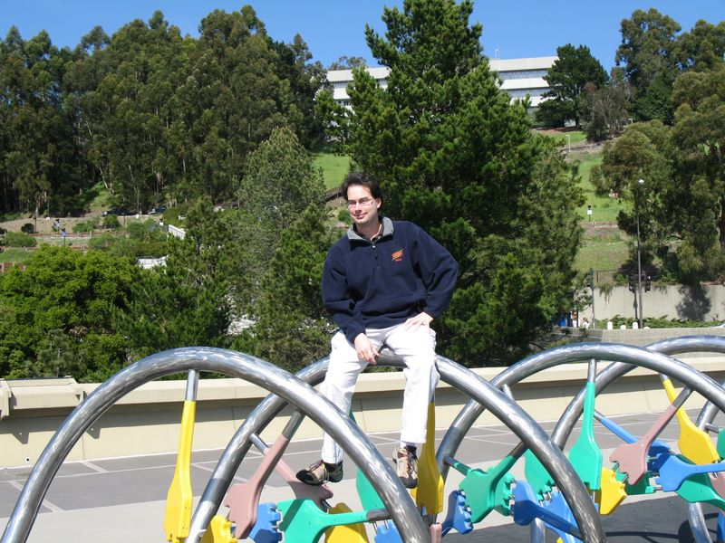

Caltech Memories -- FCCM comes soon after FPGA. It is held up in Napa Valley and on the drive back, Berkeley is a convenient stop before Oakland airport. Andre, my advisor/professor/mentor/friend, used to be a post-doc here. He sort of showed us around and is posing here on a DNA at Berkeley (FCCM, April 2005).. interestingly the date was 4/20 and the Berkeley campus was unusually deserted!
First |
Previous Picture |
Next Picture |
Last | Thumbnails
